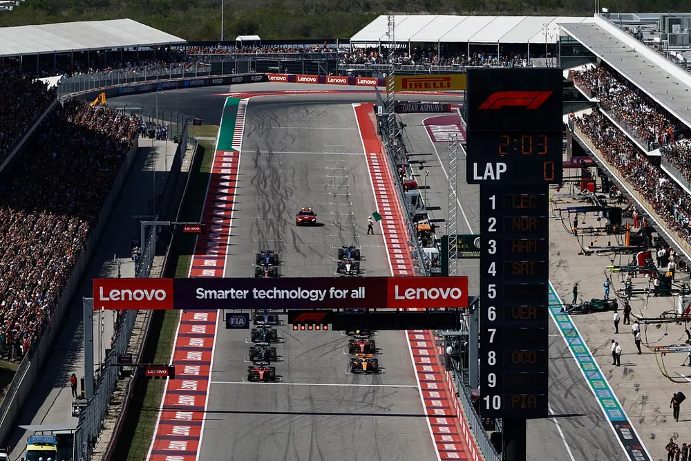

COTA önümüzdeki yılın başlarında ikinci büyük yüzey yenilemesine tabi tutularak tümseklerden arındırılmaya çalışılacak.
Verstappen, Austin'de üst üste kazandığı üçüncü zaferin ardından Lewis Hamilton ve Lando Norris ile aynı fikirde olarak pistin yüzeyinin F1'e uygun olmadığından yakındı.
COTA'da tümsekler uzun zamandır bir sorun teşkil ediyor ve zamanla yüzeyde dalgalanmalara yol açıyor. Sürücülerin 2021 Grand Prix'si ve MotoGP etkinliğinden sonra yaptıkları şikâyetler üzerine 2-10 ve 12-16 numaralı virajlar arası kısmen yeniden düzenlendi.
Ancak iki yıldan kısa bir süre sonra, F1 pilotları COTA'nın etrafındaki düzensizlik nedeniyle yine sıkıntı yaşadı. Red Bull pilotu Verstappen şunları söyledi: "Bazı yerlerde yaşadığımız zıplamalar çok fazla." "Dürüst olmak gerekirse bu pisti seviyorum, düzeni harika ama kesinlikle yeni asfalta ihtiyacımız var."
Yarıştan sonra araç tabanındaki plakanın fazla aşınması sebebiyle yarıştan diskalifiye olan Hamilton, COTA patronlarıyla diyaloğa açık olduğunu söyledi.
Hamilton, "GPDA'daki (Grand Prix Sürücüler Birliği) sürücüler olarak, onlarla görüşmeye ve belki de her şeyi bir servete mal olacak şekilde yapmamalarına yardımcı olmaya açığız." "Örneğin, son virajdan başlangıç çizgisine kadar olan kısım pürüzsüz, geri kalan kısım ise engebeli. Pit şeridi pürüzsüz ama yama yapabileceğimiz ve iyileştirebileceğimiz başka alanlar da var." dedi.
Speedcafe tarafından iddialara yanıt vermesi istenen COTA patronu Bobby Epstein, kuruluşunun 'bunu düzelteceğini' söyledi. Epstein, "Ocak ayında 12. virajdan 2. viraja kadar olan kısmı düzeltmeyi planlıyoruz. Umarım endişe konusu olan alan budur." dedi. Ancak Hamilton'ın da belirttiği gibi, start çizgisine giden son viraj onun sorun olarak gördüğü bir bölüm değil.